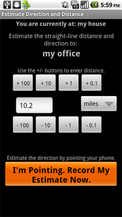

Please follow these instructions to begin using the Cognitive Surveyor application. Note that to complete this tutorial, you will need to visit two different landmarks. This could be, for example, your home and your office, or your home and your regular supermarket. The locations are up to you. Please read through all the instructions before proceeding. You may also want to consider printing these out so that you can refer to the instructions when you visit your second landmark.
If you have any questions or encounter problems, contact Drew Dara-Abrams (the experimenter) at any time: drew@geog.ucsb.edu or (805) 680-7191.
Open the Android Market on your phone, search for Cognitive Surveyor, and install this application.
Add the Cognitive Surveyor icon  to your home screen. You will want to be able to start the Cognitive Surveyor app whenever you visit a landmark during the next week (more on this below). Either drag the Cognitive Surveyor icon to your home screen, or press the Menu button, select Add, select Shortcuts, select Applications, select Cognitive Surveyor, and press Ok.
to your home screen. You will want to be able to start the Cognitive Surveyor app whenever you visit a landmark during the next week (more on this below). Either drag the Cognitive Surveyor icon to your home screen, or press the Menu button, select Add, select Shortcuts, select Applications, select Cognitive Surveyor, and press Ok.
Start the Cognitive Surveyor app by tapping its icon  .
.
Sign in using your e-mail address and the password that you received over e-mail. You should only have to do this the first time.
Landmarks are places of personal relevance to you. For example, your home, your office, your regular grocery store, a friend's house, a favorite park. One of your two tasks in this study will be to mark landmarks using the Cognitive Surveyor app. This stores the location (latitude and longitude) of the landmark, along with the time that you are visiting the landmark.
Whenever you are at a landmark, press the Visit a Landmark button. In the future, when you return to a landmark that you have already marked, you will be able to select it from this list. When you are at a landmark that you have not yet marked--right now, in other words--you should instead press the Mark a New Landmark button.
So assuming you are now at a place of personal relevance, press the Mark a New Landmark button and then type in the landmark's name. Note that as shown in the screenshot below, the satellite dish icon should start to flash at the very top of the screen. This indicates that the GPS is being used to determine your location. If the satellite icon does not appear at all you may need to turn on the GPS unit. Here are instructions for how to do that.
(To get the best GPS signal, you should be standing outdoors. If you are marking a building as a landmark, it's probably best to mark it when you are standing outside the front door. But worst case, you will have the option to correct the position of a landmark when you view your results at the end of the week.)
Once you press Mark this New Landmark the landmark will be saved.
Now that you have indicated your visit to the landmark, you will be presented with three options. Please, whenever you are not in a rush, select the first by clicking on the I am ready to estimate directions and distances button. But keep in mind that you can press the second button if you have no more time, or you can press the third button if you accidentally selected the wrong landmark.
In the future, when you have more than one landmark marked, you will be asked to estimate the directions and distances to those other landmarks. For now, you are only asked to estimate the direction to north. This makes use of the digital compass inside your Android phone. The compass needs to be calibrated often, because it isn't that precise. Please calibrate the compass by waving your phone around in a figure-eight pattern, as shown in this video. Also when you do estimates, please make sure that you are away from large metallic objects or power transformers. It's best to do the estimates outdoors, before entering a building, in order to minimize magnetic interference. When you have finished waving the phone around (for one or two seconds), you can press the Done button.
Now, hold out the phone straight ahead and aim it (and your body) in the direction in which you think north lies. Keeping the phone relatively level, press the Record button.
You're all done for now. You can put your phone to sleep or use it for other things, until you visit another landmark.
When you've arrived at a second landmark later in the day, repeat the process of starting the Cognitive Surveyor app, pressing the Visit a Landmark button, then pressing the Mark a New Landmark button, and typing in its name.
After pressing the I am ready to estimate directions and distances button you will be asked to do the second of the two tasks that make up this experiment: estimating the direction and distance between your landmarks.
After calibrating the compass (don't forget to wave the phone around, just like before), you will be asked to estimate the direction and distance from your second landmark back to your first. To estimate the distance, press the + and - buttons to add or remove distance units. By default, you are asked to estimate the distance in miles, but you can tap on the distance units to change to kilometers, feet, or meters. It's your choice. Your distance estimate should be a straight line "as the crow flies" from your current location to the target landmark.
To estimate the direction, point the phone in the appropriate direction. The internal compass will record your exact pointing direction. Once you have keyed in your distance estimate and when you are holding the phone pointing in the appropriate direction, press the I'm Pointing. Record It Now. button to complete the process.
You will again be asked to estimate the direction toward north. Take your best guess and point with the phone as before.
During the week of the study, when you mark new landmarks or visit landmarks that you have already marked, you will be asked to repeat this process of estimating directions and distances. Please give it careful thought and don't forget to calibrate the compass, but the point of the study is to collect many of these estimates. It's O.K. if you make a mistake because there will probably be another opportunity to make the estimate again. As you mark more landmarks, you will be asked to make an increasing number of estimates. Of course, the more you can complete, the better. But if you are in a rush, you can press the menu button on your Android phone and select Skip the Rest of the Estimates. This will take you right to the final north estimate.
During the course of the week, when you return to a landmark that you have already marked--for example, you return to your home at the end of the day--start the Cognitive Surveyor app, press the Visit a Landmark button, and select your current location from the list of landmarks. This records the time of your visit and begins the process of direction and distance estimates.
As you travel around during the week of the study, please continue to mark new landmarks, visit existing ones, and estimate directions and distances between them. The more of these piecemeal data points you are able to contribute, the better the results of the study will be. But there is no need to change your travel patterns or visit any more landmarks than you would in an ordinary week.
Drew will check your results and confirm that it's all being recorded properly. Please feel free to ask questions at any time. If your phone reports any errors or the Cognitive Surveyor app crashes, please make note of the exact time and let Drew know. He'll be able to diagnose the problem and (hopefully) fix it promptly.
On the seventh day of your participation, please return to the Web site. You will have the opportunity to view your results and you will be asked to complete a brief, final questionnaire.
Thank you very much for your involvement in this research!